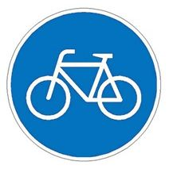

Und hier zu unseren 🤝 Kontakten und zu unserer 🚧 Mängelkarte.
Artikel in der Kategorie Verkehrspolitik
Querung - Im Siek / Klewertweg
Die Querung “Im Siek” über den Klewertweg wurde für den Radverkehr entschärft.
Die Verkehrsteilnehmer auf dem Klewertweg werden durch eine rote Markierung und eine Einengung deutlich auf die querenden Radfahrer aufmerksam gemacht. Dies gilt sowohl für Autofahrer als auch für Radfahrer auf dem Klewertweg. Radfahrer, die den Klewertweg kreuzen, haben …
Markiert als: HemmingenRücksicht auf Feldwegen
Die Landwirte bitten um mehr “Rücksicht auf Feldwegen”.

Mit der Aktion “Rücksicht macht Wege breit” wollen die Landwirte für mehr Verständnis zwischen Landwirten und Passanten auf Feld- und Wirtschaftswegen werben.
Der ADFC setzt sich für eine gegenseitigen Rücksichtsnahme ein. Ist die Straße durchgehend schmal, gilt das Gebot der gegenseitigen Rücksichtnahme …
Markiert als: HemmingenRadwegbeschilderung 🚳
Warnung:
Wir sind keine Rechtsberater. Alle nachfolgenden Informationen beruhen auf unser Wissen und könnten falsch sein.
Radwegetypen
Radweg
Wird ein Radweg mit diesem Zeichen ausgeschildert ist die Benutzung des Radweges Pflicht. Andere Verkehrsteilnehmer dürfen diese Wege nicht benutzen, es sei denn, er ist durch ein besonderes Schild gekennzeichnet. Radfahrer haben …
Markiert als: VerkehrsregelnＡＤＦＣ🚲 Fahrradklima-Test 2022 Ergebnisse
ADFC-Fahrradklima-Test 2022: Die Ergebnisse sind da!
Der ADFC-Fahrradklima-Test 2022 fragt danach, wie zufrieden die Menschen vor Ort mit ihrer Situation als Radfahrer:innen sind. Das Ergebnis: Das Klima fürs Fahrrad in Deutschland ist weiter nur ausreichend. Mit einer Gesamtnote von 3,96 hat es sich erneut verschlechtert (2020: 3,93 …
Sanierung K225 zwischen Ohlendorf und Westerfeld
ab 13. März 2023 - Sperrungen bis April, vor allem in Devese.
Im Bereich Hemmingen müssen sich Verkehrsteilnehmer:innen in den kommenden sieben Wochen auf Behinderungen und Umwege einstellen. Ab Montag, 13. März 2023, wird die K225 zwischen Ohlendorf und Hemmingen saniert. Die Straße wird abschnittsweise voll gesperrt. Betroffen ist auch …
Markiert als: PläneAlltagsradverkehrsumfrage - Wie soll sich der Radverkehr entwickeln?
Städte Pattensen und Springe machen eine gemeinsame Onlineumfrage.
Pattensen möchte ein Konzept für den Radverkehr entwickeln und hat deshalb eine Onlineumfrage gestartet. Die Umfrage endet am 19. Februar 2023, bis dahin wünscht sich Pattensen und alle Fahrradinteressierten eine rege Beteiligung. Zur Umfrage geht es auf der Internetseite https://www.pattensen …
KGS Hemmingen - Trampelpfad hinter Bushäuschen großzügig gepflastert
Die Schüler werden es schon bemerkt haben. Eine weitere Forderung des ADFC’s wurde von der Stadt Hemmingen umgesetzt. Der Trampelpfad von der Berliner Straße zur KGS, hinter dem Bushäuschen, wurde großzügig gepflastert. Damit sollten Konflikte zwischen wartenden Busfahrende und Radfahrende nicht mehr entstehen.

Seniebachbrücke bis Ende Februar 2023 gesperrt
Quelle: Leineblitz
Wir hatten gehofft das es schnell geht, mit dem Austausch der Geh- und Radwegbrücke über den Seniebach.
Jetzt mussten wir leider erfahren, dass die alte Brücke zwar abmontiert wurde, aber die neue Brücke wegen Lieferschwierigkeiten erst Ende Februar 2023 geliefert werden kann.
Zu dumm, jetzt sollen alle Radfahrende …
Fahrradrouten durch Hemmingen
Quelle: ADFC
Manchmal fährt man als Radfahrende die gewohnten Wege, weil man sie vom Auto her kennt. Aber sind das immer die besten Routen?
Wir als ADFC haben Routen erarbeitet und erkundet, die gut zu fahren sind.

Bitte mal ausprobieren. Gerne würden wir Rückmeldungen bekommen.
Übrigens: Die Routen sind auch …
Bessere Radwege mit Windpark
Der Windpark zwischen Linderte und Hiddestorf soll erneuert werden.
Die Grünen wünschen sich, dass im Zuge der Errichtung der Anlagen die Wege so angelegt werden, dass sie nach dem Ende der Baumaßnahmen als alltagstaugliche Wege für Radfahrer nutzbar sind.
Das wäre eine Chance einen Mangel abzustellen, wenn auch Hemmingen, auf …
Stadtbahn nach Arnum mit Radweg
Die Stadtbahn, die zur Zeit bis Glende gebaut wird, soll zukünftig bis Arnum verlängert werden.
Es ist geplant, dass ein Radweg auf der Ostseite der gesamten, etwa Kilometer langen Stadtbahnverlängerung entstehen soll. Auf einem 250 Meter langen Abschnitt südlich des Hohen Holzweges, wo die
Beethovenstraße unmittelbar neben der Stadtbahnstrecke verläuft …Radschnellweg soll Hannover mit Pattensen verbinden
Der Verkehrsausschuss der Region Hannover stimmt dafür, bis Ostern 2023 eine Machbarkeitsstudie zu erstellen, die mögliche Routen unter die Lupe nimmt.
Wir vom ADFC sind mit der Region, seit Mitte November, im Gespräch. Eine erste andiskutierte Variante scheint vielversprechen zu sein.
Ziel ist es einen 4 Meter breiten, glatten und …
ADFC-Klimatest 2022
ADFC-Fahrradklima-Test ist der Zufriedenheits-Index der Radfahrenden in Deutschland
Macht das Radfahren vor Ort Spaß oder ist es stressig? Vom 1. September bis zum 30. November 2022 können Radfahrende wieder das Fahrradklima in ihren Städten und Gemeinden in Deutschland bewerten.
Schwarmwissen für Verkehrsplaner:innen und politisch Verantwortliche: Die lebensnahen Rückmeldungen, nützlichen …
Radweg zwischen Hemmingen und Arnum
Der Hemminger Ausschusses für Stadtentwicklung, Umwelt und Klima hat sich am 25.8.2022 für einen gemeinsamen Geh- und Radweg mit einer Breite von 2,50 m auf beiden Seiten der Verbindung zwischen Westerfeld (Kreisverkehr Endhaltestelle Stadtbahn) und Arnum (Einmündung Hoher Holzweg) ausgesprochen. Bei dieser Variante mit einem beidseitigen gem …
Unfallorte mit Fahrradbeteiligung in Hemmingen 2021

Die Grafik zeigt Unfallorte mit Fahrradbeteiligung in Hemmingen 2021 aus dem Unfallatlas https://www.statistikportal.de/de/karten/unfallatlas. Nächste Aktualisierung: Juli 2023.
Und so sah es ein Jahr zuvor aus: Unfallorte mit Fahrradbeteiligung - Hemmingen 2020
Doring Unfälle - Holländischer Griff
Quelle: Presseportal Polizeidirektion Hannover https://www.presseportal.de/blaulicht/pm/66841/5262554

In der Nacht zu Freitag, 01.07.2022, ist ein 59-jähriger Radfahrer an den Folgen seiner Kollision mit einer Pkw-Tür gestorben. Ein Auto-Fahrer parkte kurz zuvor am Fahrbahnrand der Calenberger Straße und öffnete seine Tür, ohne auf den …
Wir haben unsere Mängelkarte aktualisiert
Die nächste AG-Radverkehr in Hemmingen ist für Juli 2022 angekündigt. Aus diesem Anlass haben wir unsere Mängelkarte aktualisiert.

Gehe zu https://adfc-hemmingen-pattensen.github.io/MaengelKarte/index.html
Markiert als: KartenVerbesserung der Verbindung zwischen Göttinger Landstraße Endhaltepunkt und Arnum für Rad- und Fußverkehr
Information aus der Ausschusssitzung vom 16. Juni 2022
Die Verwaltung hat für die Verbindung Stadtbahn Endhaltestelle und Arnum (Hoher Holzweg) zwei Varianten erarbeiten lassen. Die Variante 2 wird von der Verwaltung und dem Bürgermeister favorisiert. Die SPD braucht noch Bedenkzeit und die Grünen würden die Variante 2 gerne noch verändern …
Fahrbahn der Ortsdurchfahrt Wilkenburg wird saniert
Text der Web-Seite www.stadthemmingen.de
Auf der L389 wird ab 01. Juni 2022 die Fahrbahn sowie der Gehweg erneuert. Die Arbeiten erfolgen zunächst unter halbseitiger Sperrung.
Während der Bauarbeiten wird den Anwohnerinnen und Anwohnern der Landesstraße eine Zuwegung zu ihren Grundstücken zur Verfügung gestellt, jedoch ist mit Behinderungen / kurzzeitigen …